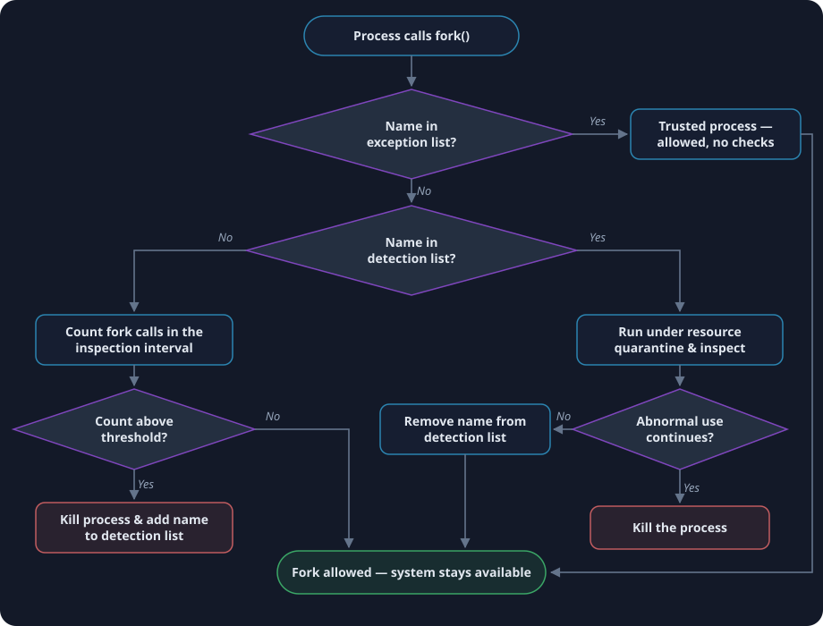

Exploring ideas that connect technology, security, and thoughtful innovation.
Research remains central to my work, whether it is publishing academic material or applying fresh thinking to cybersecurity and practical systems.
Publication
Security Against Fork Bomb Attack in Linux Based Systems
Krunalkumar D. Shah & Krunal V. Patel · International Journal of Research in Advent Technology (IJRAT),
Vol. 7, No. 4, April 2019 · E-ISSN 2321-9637 ·
DOI: 10.32622/ijrat.74201911
🏅 Nominated for the Best Paper Award in Linux research at IAENG
The problem
A fork bomb is a denial-of-service attack in which a process endlessly replicates itself until the
process table and memory are exhausted, freezing the system. Because creating a process is a legitimate
operation that needs no special privileges, even hardened Linux systems are vulnerable — availability,
one of the three pillars of information security, breaks down.
Why existing defenses fall short
Static process limits reject legitimate work once the cap is hit. Rate limits misfire on fork-heavy
software such as CAD tools. Name-based blacklists never forgive: a legitimate process that shares a
name with a past offender is killed forever. Each approach trades one failure mode for another.
The proposed defense
The paper combines name-based detection with process resource quarantine. New processes are monitored
for their fork rate; offenders are killed and their name recorded. When a recorded name reappears, it is
not killed outright — it runs inside a resource quarantine and is inspected. If it behaves, it is
released and removed from the list, eliminating permanent false positives.
Results
Evaluated with a bash fork bomb on Xubuntu 18.04 (kernel 4.15), the system identified an attack in as
little as 44 ms at a threshold of 500 forks, while known offenders were handled instantly by name.
The system stayed responsive and available throughout the attack.

How each fork request is screened — trusted names skip checks, unknown processes are rate-checked, and repeat offenders get quarantined instead of being permanently banned.